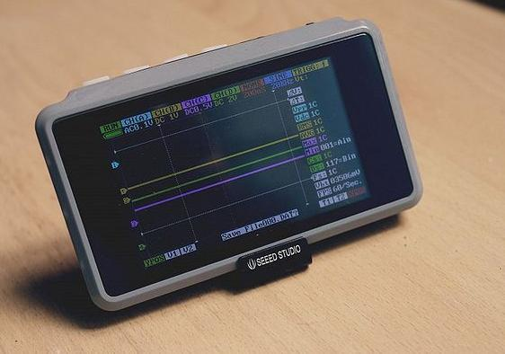
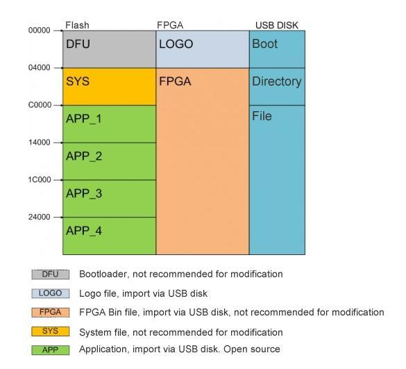

DSO Quad also known as DSO203 is a pocket size 4 channel digital oscilloscope for common electronic engineering tasks. It's based on ARM cortex M3 (STM32F103VCT6), providing 72MS/s sampling rate with integrated FPGA and high speed ADC. An internal 2MB USB disk can be used to store waveform captures, user applications and to upgrade firmware.
Model: TES725AAS

Source(s): Features support
Ongoing projects:
use 'wave out' to generate a pulse/step when master unit triggers, use C/D as trigger for slave(s)
See also information on application development for the DSO Quad
| Analog channel * 2 | [CH_A] [CH_B] |
| Digital channel * 2 | [CH_C] [CH_D] |
| Vertical Scale | 20mV-10V/div (1-2-5 step) on x1 probe / 200mV -100V/div (1-2-5 step) on x10 probe |
| Vertical resolution | 8 bit |
| Input coupling | AC/DC |
| Max input voltage | 80Vpp (x1 probe) / 400Vpp (x10 probe) |
| Storage | 4K per channel / 8K on single channel |
| Software trigger type | edge, pulse, level (to be added) |
| Hardware trigger type | edge |
| Trigger source | CH1/CH2/EXT |
| Trigger mode | Auto, Normal, Single, SCAN, None |
| Test Signal generator | 10Hz to 8MHz 2.8Vpp Square Wave, duty cycle 10~90% adjustable / 10Hz to 20kHz 2.8Vpp Sine, Square, Sawtooth, Triangle wave |
| Storage | internal 2MB USB disk, BMP, DAT file |
| Auto measure | Vmax, Vmin, Vpp, Vavr, Vrms, Freq, Period, Pulse, Duty |
| Cursor measurement | Level, Voltage |
| Display mode | CH1, CH2, EXT, CH1+CH2, CH1-CH2 |
| Sampling mode | real time |
| Sampling rate | 30S/s - 72MS/s |
| Power | LiPo battery |
| Dimension | 98 * 60 * 14.5 (mm) |
| Weight | 80g (without battery) |
| Accesories within Pack | 2 mcx osilloscope probe, 2 mcx digital probe |
Please add links to core components data-sheets like
| CPU | 72 Mhz - ARM 32-bit Cortex™-M3 CPU - STM32F103VC [2] |
| FPGA | ICE65F_VQ100 [3] |
| TFT | |
| ADC | AD9288-40 [4] |
| OP-Amps | OPA2354 [5] |
| MOSFET-Switches | |
| USB-Storage | |
| (add more here) |
Improper operation of this device could result in physical injury and/or damage to the device. Note all necessary precautions, and be sure to read all documentation before using the device.
Schematic and firmware (HW2.2 ~ HW2.72) - http://www.seeedstudio.com/wiki/DSO_Quad:Upgrading_Firmware#Firmware_List
Discussion board with resouces for HW2.6 - http://www.seeedstudio.com/forum/viewtopic.php?f=22&t=1929
DSO Quad User's manual(ver1.0 above): DS203_yijian_app_user_manual.rar
Unofficial manual written by the community: DSO Quad Manual (by the community)
Please note that this procedure currently only works under Windows. Instructions For Linux are here. (2011-04-29) If we can get the upgrade disk to work on Linux and Mac, it would be quite easy to write an application to automate this process for less experienced users. It might even be possible to have the upgrade program check the hardware version to prevent uploading the wrong firmware.
Track the latest version to firmware at: http://garden.seeedstudio.com/index.php?title=DSO_Quad:Upgrading_Firmware#Firmware_List you can always download the latest version of firmware
You could also build the firmware from source.
WARNING: It is important that you use the firmware for your particular hardware version. The hardware version is shown on the splash screen when you boot the device. Ask for help in the forums if you can't determine your hardware version. If you upload the wrong firmware, you could brick the device.
(Windows only) Connect the DSO Quad to your PC with a mini USB cable. Hold down the ">||" (play/pause) button while turning on the device. Your device is now in firmware upgrade mode, and a USB disk should appear on your system. You copy the firmware files one at a time, and each time you copy a new file, the device will disconnect to prepare the file. When the disk reconnects, the extension of the file you uploaded will change (".rdy" means the upload worked properly).
The order that you upload the files in DOES matter. Start by uploading the .hex files (order unimportant). To upload the .BIN files, you need to first upload the corresponding .ADR file. This tells the device where to put the binary file (e.g. upload CFG_FPGA.ADR first, then upload xxxxFPGA.BIN immediately after). If you make a mistake, delete all the files and start again.
When you're finished uploading all the firmware files, turn off the device to complete the upgrade. When you boot the device again, your firmware versions should be updated. If you get an error at the splash screen, try uploading the firmware again, carefully following the instructions above.
More details and Linux instructions here: DSO_Quad:Upgrading_Firmware
| File Type | Filename Format | Description |
|---|---|---|
| FPGA File | xxxxFPGA.BIN | configuration data for the FPGA |
| Logo File | logo_xxx.BIN | Create any 16 color 64*256 .BMP file (filesize = 46.9KB), and change the extension to .INF. This is the image displayed on the splash screen. |
| System File | SYS_xxxx.hex | ??? (description needed) |
| Application File | APP_xxxx.hex | ??? (description needed) |
| Address File | xxxx.ADR | These files tell the device where to put the next .BIN file you upload. There is one for the FPGA file, and one for the LOGO file. The files are named so that you know which goes with which. |
note: as newer versions become available, these filenames may appear slightly different. The x's represent values that could change over time.

| Begin | End | Size | note |
| 0x00000 | 0x03fff | 16384 | DFU |
| 0x04000 | 0x0bfff | 32768 | SYS |
| 0x0c000 | 0x13fff | 32768 | APP1 (default) |
| 0x14000 | 0x1bfff | 32768 | APP2 |
| 0x1c000 | 0x23fff | 32768 | APP3 |
| 0x24000 | 0x2bfff | 32768 | APP4 |
| 0x2c000 | 0x3d7ff | 71680 | FPGA bitstream (Datasheet says maximum size is 533KBit, so this is a bit large) |
| 0x3d800 | 0x3ffff | 10240 | Logo (bmp, 256x64, 4 bit) |
Note: The flash base address is 0x08000000, but is mirrored by the chip at 0x00000000 when BOOT0 is low.
DSO Quad engineering sample bug and firmware
This documentation is licensed under the Creative Commons Attribution-ShareAlike License 3.0 Source code and libraries are licensed under GPL/LGPL, see source code files for details.